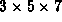
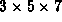
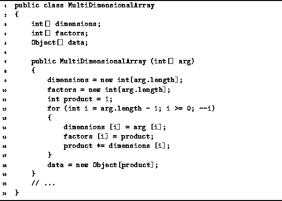
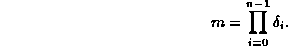

Data Structures and Algorithms
with Object-Oriented Design Patterns in Java
Data Structures and Algorithms
with Object-Oriented Design Patterns in Java
The constructor for the MultiDimensionalArray class
is defined in Program  .
It takes as its lone argument an array of ints
which represents the dimensions of the array.
For example,
to create a  three-dimensional array,
we invoke the constructor like this:
.
It takes as its lone argument an array of ints
which represents the dimensions of the array.
For example,
to create a  three-dimensional array,
we invoke the constructor like this:
MultiDimensionalArray a =
new MultiDimensionalArray (new int[] {3, 5, 7});

Program: MultiDimensionalArray constructor.
The constructor copies the dimensions of the array into the dimensions array, and then it computes the factors array. These operations take O(n), where n is the number of dimensions. The constructor then allocates a one-dimensional array of length m given by

The worst-case running time of the constructor is O(m+n).
 Copyright © 1998 by Bruno R. Preiss, P.Eng. All rights reserved.
Copyright © 1998 by Bruno R. Preiss, P.Eng. All rights reserved.